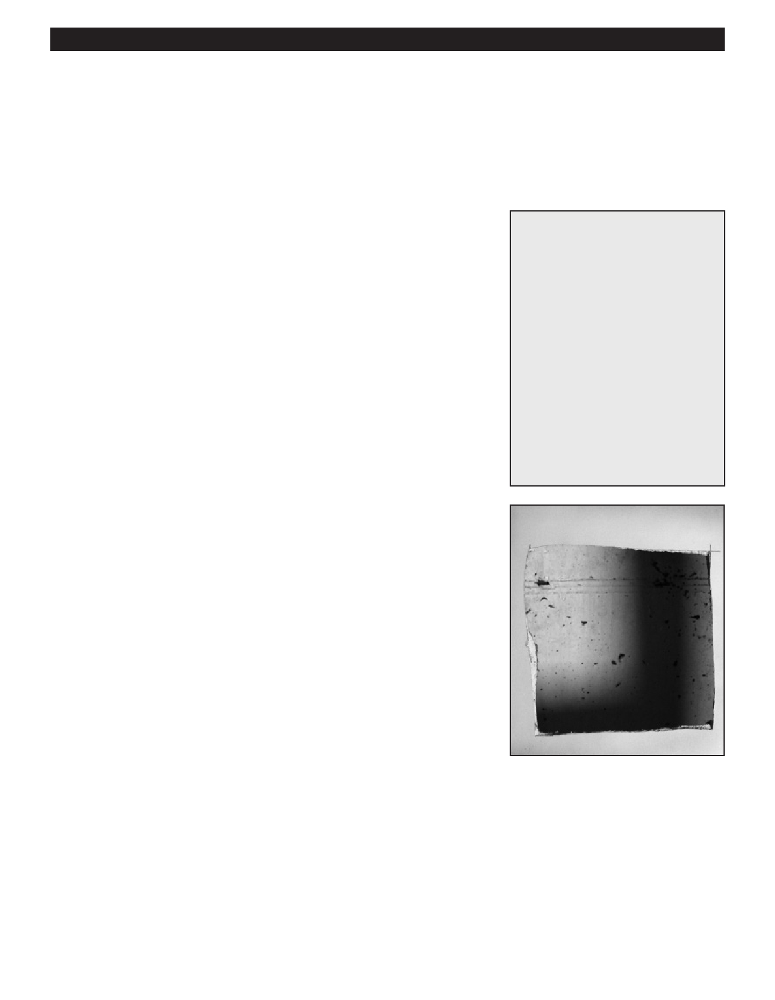

PA RT I C I PA N T R E S O U R C E G U I D E
Ceilings and Walls:
Patch a Larger Hole in Drywall
When you patch a larger hole in drywall (up to about 24 inches square) you need to
provide not only an actual drywall patch, but also the structural support for it.
Safety
Tools and Materials Needed
Wear eye protection and a mask.
Framing square or straight edge
Be careful using a saw or utility knife.
Wallboard saw, keyhole saw, or
utility knife
Length of 1x4 or 2x4 wood
Section of drywall wallboard
larger than damaged area
Coarse thread drywall screws 1”
to 1-1/2” long
Wallboard taping knife
Wallboard joint compound
Drywall sanding block or
sanding screen
Primer
Paint
How-to Steps:
Step 1: Prepare Opening
1. Using a straight edge (or preferably a framing square), mark off a square or
rectangular section around the large drywall hole.
2. Cut through the paper surface on the marked lines using a wallboard saw,
keyhole saw, or utility knife.
Step 2: Install Support Blocking
The patch will be supported and fastened to two of the sides of the opening
with wood support blocking. Use 1x4 or a 2x4 scrap wood for the support.
1. Cut two lengths of wood 4” to 6” longer than the longest length of the
opening.
2. Place one length of wood along the longest edge inside the hole so that
half the width is over the opening and the other half is over the existing
wallboard.
3. Position the blocking so you have equal overlap of the board at each end
of the opening.
4. Hold the board in this position, then fasten it in place with 1” to 1-1/2” long
drywall screws. Place screws at each end and also about 6” apart along
the length of the opening.
5. Repeat steps 1 to 4 for the other side of the opening.
15